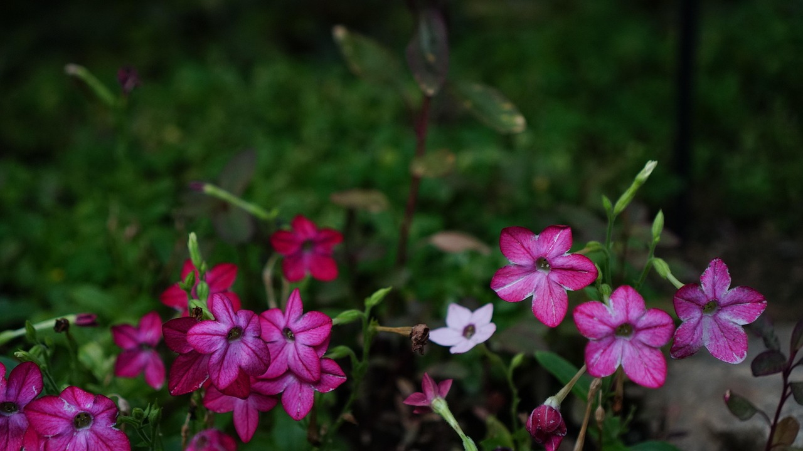
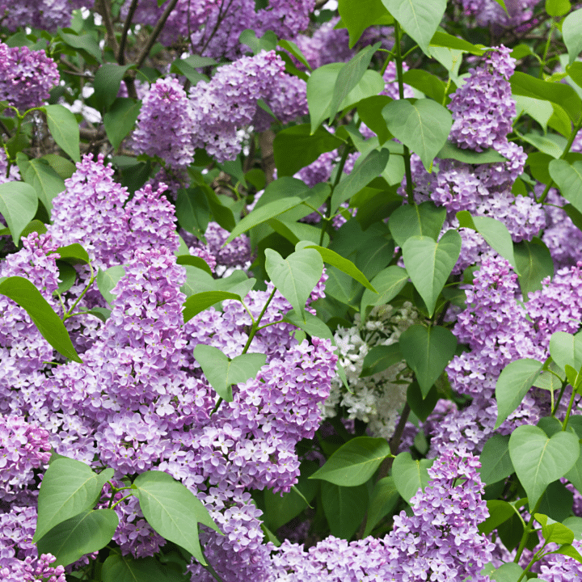
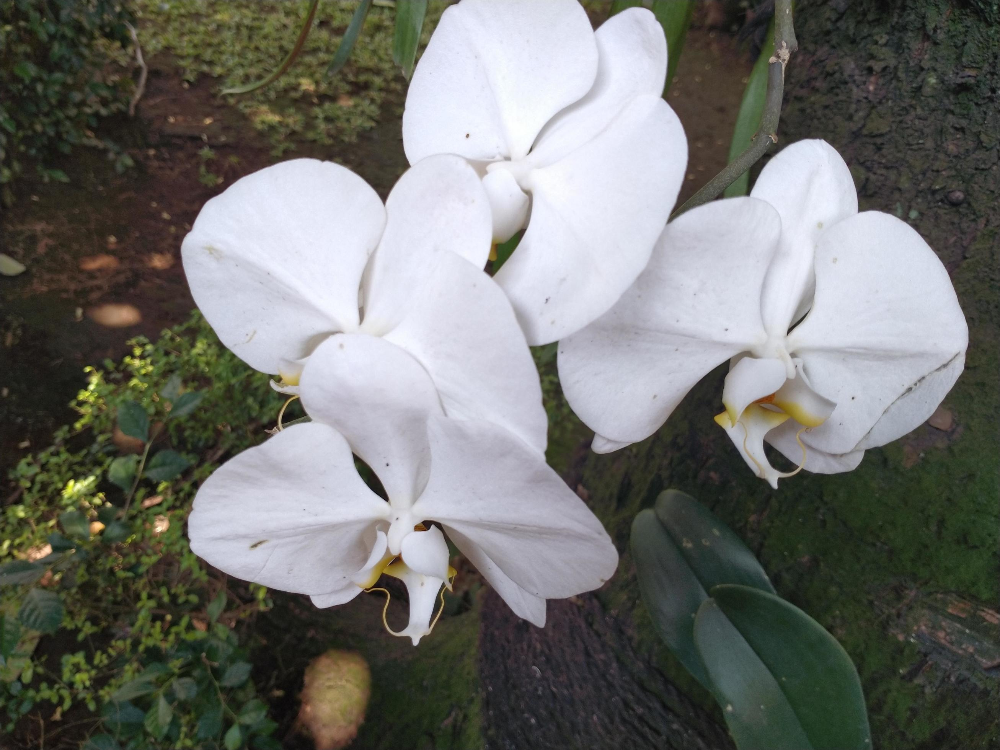
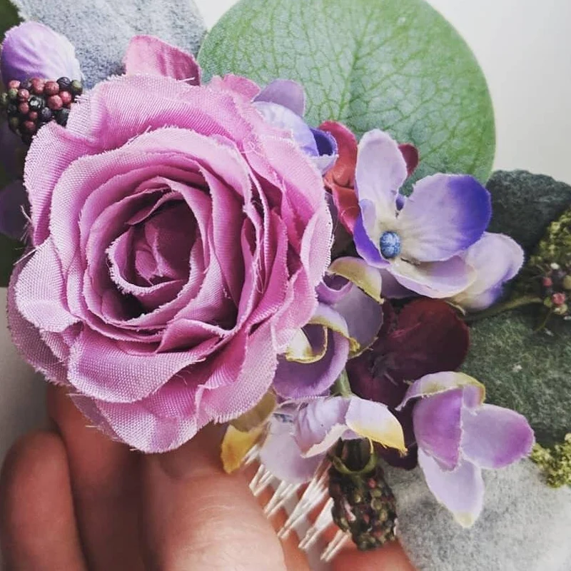
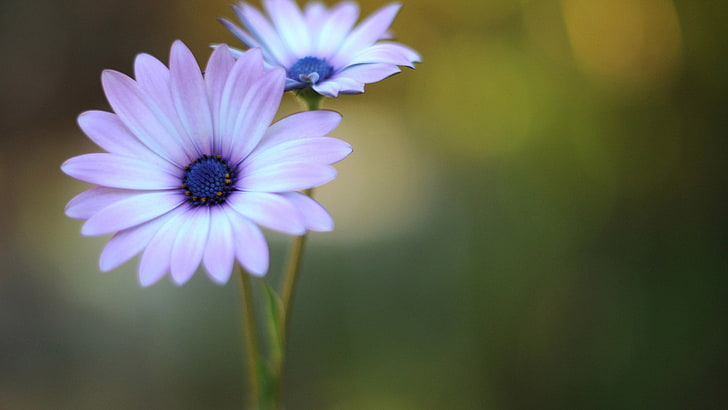

Where Flowers Become
Art
Botanical memories crafted with passion and preserved with elegance.
Our Specialities
Explore our diverse range of botanical preservation styles.

The Creation Journey
Collect
We carefully pick or receive your special flowers.
Preserve
Traditional pressing methods for color retention.
Design
Artistic arrangement with delicate layout.
Frame
Sealed in archival glass for longevity.
Deliver
Hand-delivered with care to your doorstep.
Master the Art of
Flower Preservation
Join our creative botanical workshops and learn the delicate art of flower preservation from professional artists.
Reserve My SeatThe Studio Standard
Handmade Art
Natural Flowers
Custom Design
Premium Frames
Eco-Friendly
#StudioBotanica
Follow us for daily floral inspiration



